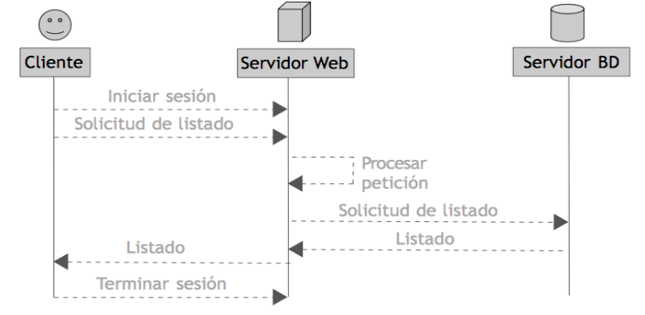
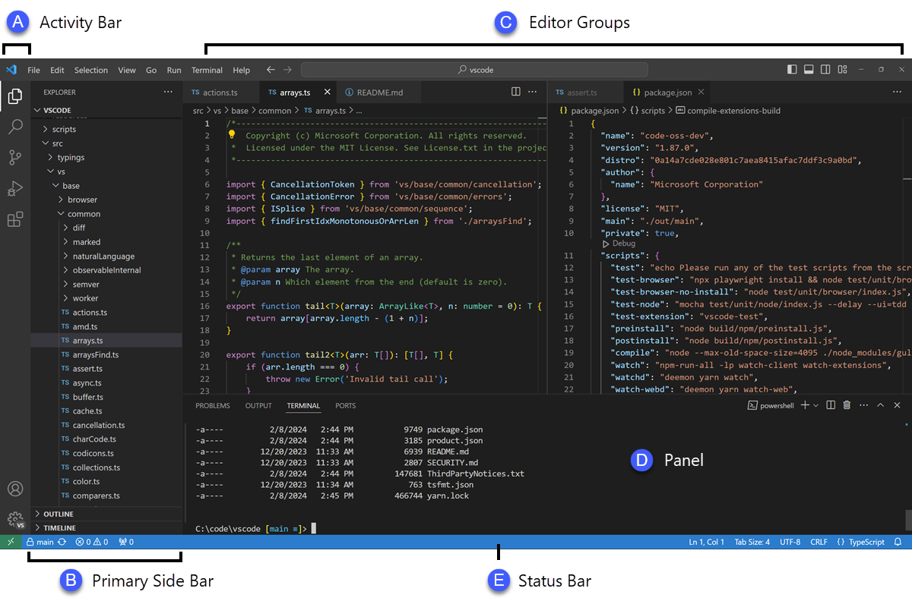
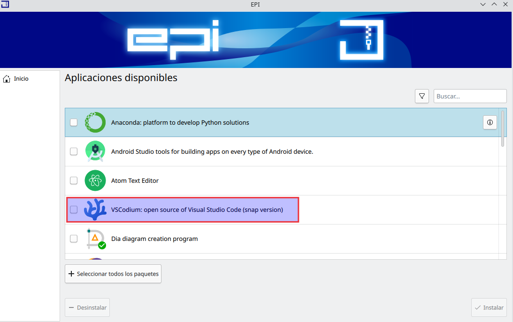
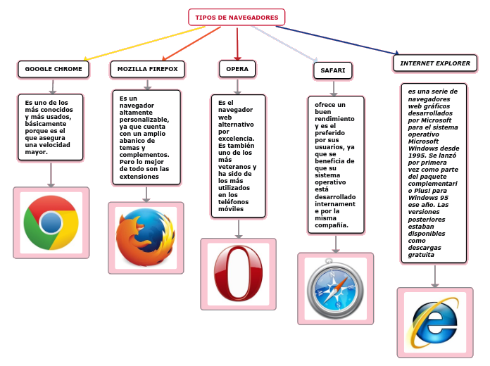
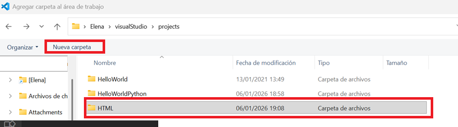
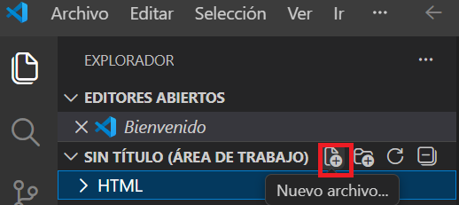
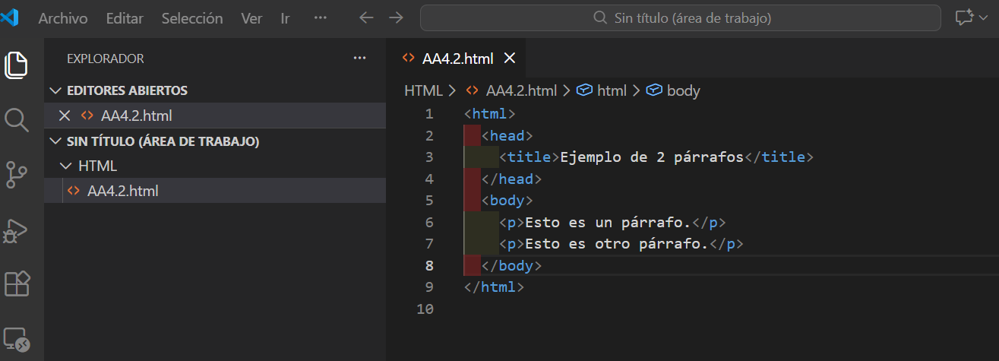
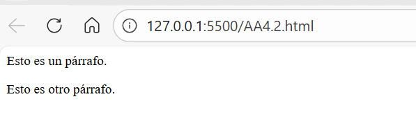
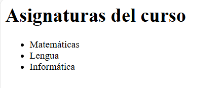
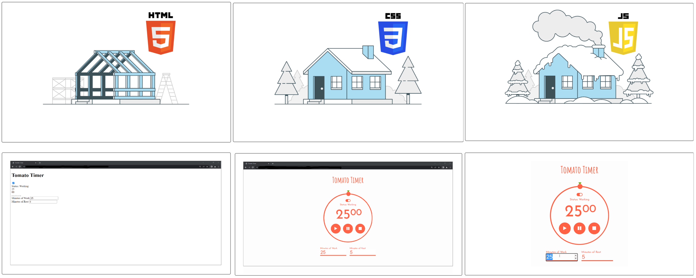

Introducción a las páginas web¶
- ¿Qué es una página web?
- ¿Para qué sirven HTML y CSS?
El profesor de Informática te pide que mejores la presentación de tus trabajos creando contenido interactivo y visual en línea.
En este apartado vamos a estudiar la estructura de las páginas web con HTML y su presentación visual con CSS.
Hoy en día, Internet se ha convertido en una "ventana al mundo", todas las empresas e instituciones tienen su propia página web que les sirve para presentarse al resto del mundo. Por eso, el desarrollo web es actualmente una de las profesiones con más auge.
Una página web es un documento que puede contener texto, sonido, vídeo, programas, enlaces, imágenes, hipervínculos y muchas otras cosas, adaptada para la llamada World Wide Web (WWW) y a la que se puede acceder mediante un navegador web.
Esta información se encuentra generalmente en formato HTML y puede proporcionar acceso a otras páginas web mediante enlaces de hipertexto.
Frecuentemente también incluyen otros recursos como pueden ser hojas de estilo en cascada, scripts, imágenes digitales, entre otros.
Las páginas web pueden estar almacenadas en un ordenador local o en un servidor web remoto. El acceso a las páginas web es realizado mediante una transferencia desde servidores, utilizando el protocolo de transferencia de hipertexto (HTTP).
Para acceder a una pagina web almacenada en la web, necesitamos conocer su URL (Uniform Resource Locator) e introducirla en la barra de direcciones de un navegador web.
Cada página web tiene su propia URL. Las URL están compuestas de varias partes que permiten al navegador localizarlas dentro de un servidor.

- Protocolo: Reglas que debe seguir el navegador para encontrar la página web.
- Subdominio: Para el protocolo http suele ser www, aunque existen otros.
- Dominio: Es el nombre donde se almacena el sitio web.
- Subdirectorio: Es una carpeta alojada dentro del dominio indicado.
- Archivo: Es el archivo o página que nos va a mostrar el navegador web. Está dentro del subdirectorio indicado.
Servidores web¶
Cuando visitas una página web, los datos por los que navegas han de estar almacenados en algún sitio para que puedas acceder. En lugar de guardarlos en el ordenador del creador del sitio (esto supondría muchos problemas para el mismo), lo que se hace es utilizar servidores web en los que se alojan todos los datos, así que te vendrá bien saber aumentar velocidad de un ordenador.
Por tanto, un servidor web es un ordenador especialmente preparado para estar encendido las 24 horas del día los 365 días del año.
En el siguiente vídeo se nos explica qué es un servidor web.
Funcionamiento de una aplicación cliente-servidor¶
En una aplicación web, el cliente (el navegador) se conecta a un servidor para solicitar recursos o servicios, como una página web o el envío de datos. El servidor recibe estas solicitudes, las procesa, y envía una respuesta al cliente. Este proceso se repite cada vez que el cliente necesita nueva información o servicios del servidor.
El flujo general de este tipo de comunicación es el siguiente:
- El cliente se conecta al servidor.
- Solicita un recurso (por ejemplo, una página web).
- El servidor procesa la solicitud y contacta con la aplicación o base de datos adecuada.
- El servidor recibe la respuesta de la aplicación o base de datos y la prepara.
- El servidor envía la respuesta al cliente.
- El cliente puede hacer otra solicitud o cerrar la conexión

Actividad
📝 AA4.1 Web¶
(C.ESP2 / CE2.4 / IC1-3p)
- ¿Qué es una página web?
- ¿En qué consiste el protocolo HTTP?
- ¿Para qué utilizan las Cookies los navegadores web?
- ¿Qué es la dirección URL y de qué partes se compone?
- Busca nombres de protocolo distintos de http.
- ¿Qué es un servidor web y para qué se utilizan?
Herramientas para desarrolladores web¶
Para editar una página web se necesitan varias herramientas variadas, ya que se trata de mezclar letras, colores, fondos, fotos, dibujos, vídeos, etc. en una sola pagina, por eso, un editor de páginas web debe tener y dominar varias herramientas digitales, como son:
- Repositorio de plantillas: Sitio web con plantillas de páginas web, para utilizarlas o basarse en las mismas.
- Editor de paleta de colores: Programa creador de la paleta de colores de la página.
- Repositorio de tipografías: Sitio de fuentes o tipos de letra.
- Banco de imágenes: Páginas desde las que exportar imágenes para la página web (Hay sitios de pago y sitios gratuitos)
- Banco de iconos: Página repleta de icono para la página clasificados en distintas categorías y diseños.
- Banco de vídeos: Recopilatorio de vídeos y animaciones (También podemos encontrar vídeos de pago y vídeos gratuitos).
- Editor de imágenes: Programa manipulador de imágenes (Para recortarlas, girarlas, cambiar colores, incluir letreros, etc.).
- Creador de prototipos: Webs donde podemos hacer un boceto de la estructura de la web (Mookup).
- Maquetador visual: Es el sitio donde creamos la página (Page builder).
- Diseñador de logotipos: Webs donde podemos crear el logotipo de la web o empresa fácilmente.
Editores de texto para HTML¶
Para empezar a crear páginas web solo necesitaremos un editor de texto básico y un navegador web.
Como editor de texto nos servirá el Bloc de Notas de Windows (Notepad) o algún editor de texto básico de Linux.
Existen editores de texto orientados a la programación que ofrecen ventajas a la hora de editar un documento HTML, como [Visual Studio Code]https://code.visualstudio.com/):
- Resaltan las palabras clave en distintos colores para facilitar la edición de código,
- Autocompleta las etiquetas HTML.
- Ofrecen consejos de ejecución.

Ordenadores Aula
Los ordenadores del aula deberían tener Visual studio por defecto, en caso de no ser así se instalará mediante la Zero Center. Seleccionar FP programas y seguidamente Visual Studio Code para windows.

Navegadores web¶
Todos los navegadores web actuales soportan el lenguaje HTML (Además de otros), así que son capaces de mostrar las páginas web creadas con HTML con el mismo aspecto, independientemente del sistema operativo utilizado.
En el siguiente esquema vemos los navegadores más utilizados.

Actividad
📝 AA4.2 Editando una web¶
(C.ESP2 / CE2.4 / IC1-3p)
- Abre el editor de texto que hay instalado en tu ordenador.
- Crea un nuevo proyecto o carpeta donde se guardarán todas tus páginas webs a partir de ahora.

- Crea un nuevo archivo llamado
AA4.2.html

- Copia el siguiente código y guárdalo.
<html> <head> <title>Ejemplo de 2 párrafos</title> </head> <body> <p>Esto es un párrafo.</p> <p>Esto es otro párrafo.</p> </body> </html>

- Busca en el ordenador la página creada y ábrela con el navegador.

-
Crea un nuevo archivo llamado
AA4.2_Lista.html -
Copia el siguiente código y guárdalo.
<html> <head> <title>Mi primera lista</title> </head> <body> <h1>Asignaturas del curso</h1> <ul> <li>Matemáticas</li> <li>Lengua</li> <li>Informática</li> </ul> </body> </html> - Busca en el ordenador la página creada y ábrela con el navegador.

- Sube a la tarea una captura de pantalla de lo que se visualiza en el navegador y cómo se ve en tu editor de ambas webs.
Lenguajes de edición de páginas web¶
Aunque actualmente existen sitios en la web donde construir páginas arrastrando boques de texto, imágenes, etc. como Google Sites, Wix, weebly..., son sitios con opciones muy cerradas, que no permiten hacer páginas personalizadas ni originales, sino que todas tienen un aspecto similar.
Si lo que se quiere es crear una página web a medida, original y distinta a las demás, hay que construirla mediante un lenguaje de edición. Los lenguajes de edición de páginas web más utilizados hoy en día son:
- XML (Extensible Markup Language, lenguaje de marcas extensible) es un estándar para el intercambio de datos estructurados entre distintas plataformas, y tiene un formato muy sencillo.
- XHTML (Extensible Hypertext Markup Language, lenguaje extensible de etiquetado de hipertexto) es una reformulación del HTML 4.0 combinado con la versión 1.0. de XML. Complementa las cualidades del HTML agregando la extensibilidad del XML.
-
HTML (Hyper Text Markup Language, lenguaje de etiquetado de hipertexto) es el más sencillo y el más antiguo, se trata de un documento de texto que integra el contenido de la página web mediante etiquetas.
- HTML5 es la quinta revisión del lenguaje HTML y fue publicada a fines del año 2014. Dispone de dos alternativas de sintaxis: una tradicional y otra combinada con XHTML. Es el lenguaje recomendado actualmente para páginas web porque brinda mejor accesibilidad.
-
CSS (Cascade Style Sheets, Hojas de Estilo en Cascada) es un lenguaje que se utiliza para separar el contenido (los datos ) del diseño. De este modo, al cambiar las definiciones de algún parámetro en el archivo CSS, se modifica la apariencia de todos los archivos HTML de un sitio.
- JavaScript es un lenguaje de programación que permite agregar interactividad y dinamismo a las páginas web. Con él se pueden crear menús desplegables, animaciones, validaciones de formularios, comunicación con servidores y todo tipo de efectos que mejoran la experiencia del usuario.
- Flash: este programa originalmente se usaba para realizar animaciones vectoriales, pero paulatinamente se ha convertido en uno de los mejores proveedores de experiencias interactivas, gracias a su propio lenguaje de programación, el ActionScript. Se integra dentro de un documento HTML como parte de la página o constituye la página completa, puede integrar todos los medios y combinarse con bases de datos. Los editores de gráficos, sonido y video en línea generalmente están diseñados con Flash.

Actividad
📝 AA4.3 Herramientas desarrollo Web¶
(C.ESP2 / CE2.4 / IC1-3p)
- Busca en Internet cada una de las herramientas de desarrollo web vistas e indica el nombre de al menos una de cada tipo.
- Indica los nombres de los principales lenguajes de edición de páginas web y un breve resumen de su funcionalidad.
Referencias¶
- Blog Cheatsheet HTML
- Mdn WebDocs HTML